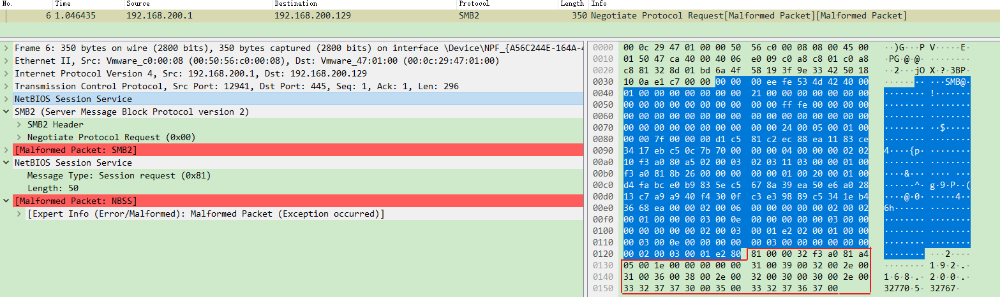

前言
Mutiny是由思科研究人员开发的一款基于变异的网络fuzz框架，其主要原理是通过从数据包(如pcap文件)中解析协议请求并生成一个.fuzzer文件，然后基于该文件对请求进行变异，再发送给待测试的目标。通过这种方式，可以在很短的时间内开始对目标进行fuzz，而不用关心相关网络协议的具体细节。
最近在对MikroTik设备的SMB服务进行分析测试时，在尝试采用基于生成方式的fuzzer没有效果后，试了一下Mutiny Fuzzer，意外地发现了3个漏洞。下面对该过程进行简要介绍。
这里主要采用黑盒测试的方式
Mutiny Fuzzer简介
Mutiny是一款基于变异的网络协议fuzz框架，其主要是采用Radamsa工具来对数据进行变异。内部的fuzz流程与其他的协议fuzz框架(如Boofuzz，Kitty)类似，也提供了在不同阶段对请求数据进行动态修改、对目标进行监控等功能。
以master分支为例，主要模块的说明如下。
experiment分支加入了更多的特性，如自动生成PoC、反馈机制等。
1 | mutiny-fuzzer |
MikroTik SMB测试
MikroTik设备支持SMB协议，相关的功能主要在/nova/bin/smb程序中。通过对程序代码进行分析，感觉其是由厂商自己实现的，未复用第三方库，考虑到SMB协议的复杂性，该程序似乎是一个不错的fuzz目标。默认情况下smb服务是关闭的，可通过如下命令开启。
1 | /ip smb set enabled=yes |
通常，对比较复杂的网络协议进行测试，笔者会优先考虑基于生成的fuzz方式，即根据协议格式去定义请求，然后对请求进行变异，保证变异后的请求仍然是”符合”协议格式的。因为如果协议比较复杂的话，协议之间的关联或约束会比较多，基于变异的方式很大可能会破坏请求的协议格式，无法通过程序内的校验，造成fuzz的效率低下。
在采用基于生成的方式进行fuzz后，并没有发现问题。想到之前有国外研究人员利用Mutiny工具在smb服务中发现了漏洞CVE-2018–7445，于是打算尝试下Mutiny工具。文章 Finding and exploiting CVE-2018–7445 (unauthenticated RCE in MikroTik’s RouterOS SMB) 详细介绍了作者从环境搭建、测试、漏洞分析到漏洞利用的整个过程，感兴趣的可以看一下。
在采用基于生成的方式进行
fuzz时，笔者主要关注的是smb协议中无需认证的部分，因此只对部分请求进行了测试。
.fuzzer文件生成
以stable 6.44.2版本为例，在开启smb服务后，在win10下访问对应的共享文件夹，同时利用wireshark捕获数据包，部分请求如下。
根据SMB协议的交互流程，前面几个请求如Negotiate Protocol、Session Setup等是无需认证的，由于笔者主要关注无需认证的攻击面，因此打算仅对前面几个请求进行fuzz。
在有了数据包之后，运行mutiny_prep.py对数据包进行处理，生成mutiny需要的.fuzzer文件。同时，可以根据自己的需求对生成的.fuzzer文件进行自定义修改，部分示例如下。需要说明的是，根据mutiny的fuzz流程，建议为每个请求单独生成一个.fuzzer文件。
笔者曾问过关于
mutiny的处理逻辑，可参考这里。
1 | # Directory containing any custom exception/message/monitor processors |
目标监控与环境恢复
在有了对应的.fuzzer文件后，运行mutiny.py脚本，就可以开始对目标进行fuzz了。
Mutiny框架的目的就是让使用者能尽可能快地开始对目标进行fuzz。
1 | ./mutiny.py -s 0.1 --logAll ./<path to .fuzzer file> <ip> |
上面的命令会记录所有的输出，为了后续更方便地对畸形用例进行定位及重放，考虑增加对目标是否发生异常进行监控。由于smb服务会监听445/tcp端口，而当smb程序崩溃时，该端口会不可访问，因此可以通过探测445/tcp端口是否可访问的方式来监控目标是否发生异常，对应的代码可以添加在mutiny_classes/monitor.py中。这样，当目标出现崩溃时，日志中会记录崩溃对应的测试用例编号。
另外，虽然smb程序崩溃后会自动重启，但当发生多次异常后smb环境会出现小问题，同时为了保证每次smb程序重启后环境与最开始一样，考虑到整个mikrotik系统运行在vmware中，因此可以考虑借助vmware快照的方式保证环境的一致，即在最开始时拍摄快照，当目标发生崩溃后恢复快照，然后再继续进行fuzz。同样，对应的代码可以添加在mutiny_classes/monitor.py中。
现在可以开始对目标进行fuzz了。当然，如果直接采用最原始的.fuzzer文件，即直接对整个请求进行变异，发现崩溃的耗时可能会比较长。因为SMB协议中包含magic(·\xfe\x53\x4d\x42，以smb2为例)、command(0x0(Negotiate Protocol),0x01(Session Setup))等字段，如果这些字段不符合协议约定的话，生成的测试用例大概率会被程序丢弃。因此还是要借助对协议的理解和对程序进行逆向，了解程序内部协议的大概处理流程(比如校验哪些字段)，然后对.fuzzer文件进行修改，指定哪些部分保持不变、对哪些部分进行变异等。
崩溃用例分析
在运行一段时间后，发现了多个测试用例会造成目标程序崩溃，通过对测试用例进行重放和分析，最终共有3个测试用例会造成不同的崩溃，其中的一个测试用例如下。
这个测试用例比较有意思的是，在正常的Negotiate Protocol请求之后，又多了一层NetBIOS Session Service数据包。由于是针对单个Negotiate Protocol请求进行fuzz，如果采用常规的基于生成的方式，即仅对协议内的字段进行变异，似乎很难生成这样的测试用例。而采用变异的方式，出乎意料的得到了这样一个测试用例，这可能得益于Radamsa工具的强大能力。当然，变异的方式也有其弊端，比如对前面某个字段进行变异，很可能由于这个字段违背了协议规约，造成其后面的字段全部被”破坏”，牵一发而动全身。
小结
本文对Mutiny-Fuzzer框架进行了简要介绍，并针对MikroTik设备的smb服务进行了简单测试。当需要对复杂网络协议进行测试时，可以尝试一下Mutiny-Fuzzer框架，”快”就是优势，说不定会有意外收获。当然，在对协议和目标有了一定的了解后，可以对其进行改进，或者采用更有效的fuzz方式。
相关链接
- mutiny-fuzzer
- Finding and exploiting CVE-2018–7445 (unauthenticated RCE in MikroTik’s RouterOS SMB)
本文首发于信安之路，文章链接：https://mp.weixin.qq.com/s/rA-ydKwnGgky5jYxMd-H4g